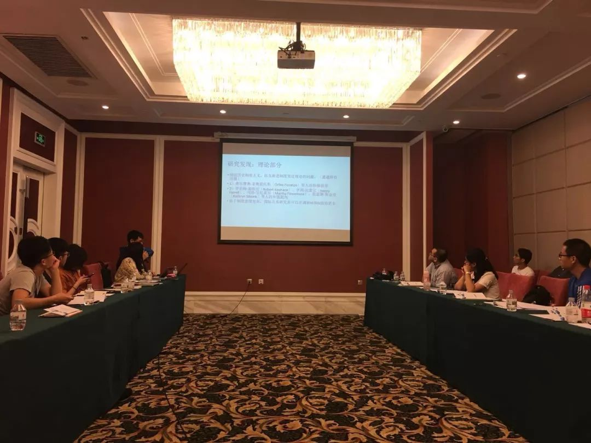
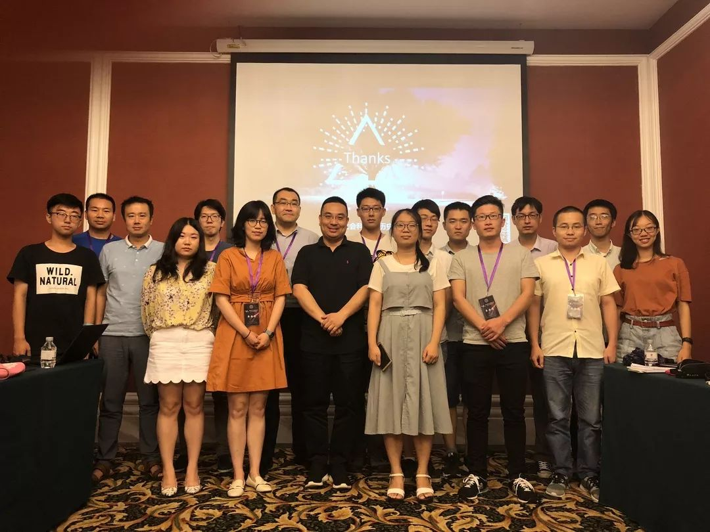
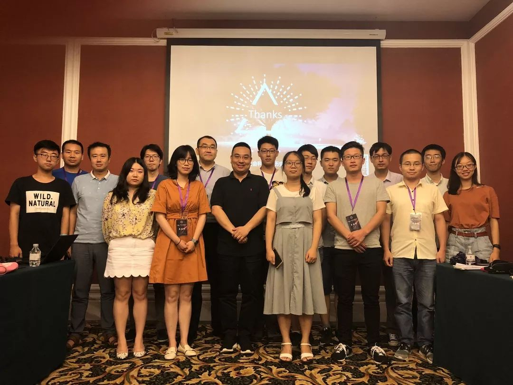

收录于合集
今年的北京，雨季来得比往年早了一些。2018年7月17日早上，朱天飚老师用打车软件从七点半一直等到了九点，陈宇茜同学被迫挤进了电动三轮车，而从五道口一路步行到辽宁大厦的黄宗昊老师反而成了第一个来到现场的发言人。
但暴风骤雨并没有影响比较历史研究者的热情。
这次专题讨论的评议人是浙江大学社会学系的朱天飚老师，发言人共六位，按照发言顺序分别是上海交通大学国际与公共事务学院的黄宗昊老师、美国西北大学社会学系的博士候选人李蓝天同学、复旦大学国际关系与公共事务学院的博士研究生曹航同学、山西大学历史文化学院的白若萌老师、安徽大学社会与政治学院的刘城晨老师、哈佛大学东亚研究生项目研究生陈宇茜同学。“比较历史分析的应用与反思”专题讨论少长咸集，参与者来自不同的地域与研究方向——由此不难看出，比较历史分析的共同体，是一个包容开放的共同体，以至于李蓝天学姐在会后感慨虽然她是社会学系的学生，但反倒在这样一个偏政治学的共同体会议上找到了归属感。
本次讨论的议题是多元的，既有经济发展、政治稳定等传统议题，也有族群冲突等新兴议题，以及医药创新这种国内学界并不怎么关注的事情（但万万没想到最近刚刚上映了《我不是药神》让这个议题火了一把），当然还包括方法论研究本身。作为唯一一篇立足方法论研究的文章，黄宗昊老师首先展示了历史制度主义研究中“由树及林”和“由林见树”的两种研究取向及其各自存在的问题，进而了借鉴奥斯特罗姆、威廉姆森等经济学家的研究，通过“层次分析”以阐述制度层次受到哪些上级层次的制约、会和哪些同层次制度交互以及能制约哪些下层制度，最后以金融改革和政商关系两个案例论述其观点。黄老师认为，层次分析这块“遗失的拼图”有助于厘清渐进制度变迁的类型学、统合历史制度主义的两条路线并重申历史制度主义的整体性和脉络性的特质。
这是一篇质量上乘的方法论研究。国内涉及方法论的文献尚普遍停留在对某种方法的引介上，甚至是对国外方法论文献的随意编译，因此导致了很多方法被引入后依旧似是而非。而黄老师的研究，恰好反击了这股风潮，为大家展现了文献积淀与学术创新的结合。朱天飚老师同样对此做出了很高的评价，由衷赞叹了黄老师的文献功底。但与此同时，朱老师也提出了一个所有方法论研究者不得不面对的问题：方法论研究本身的目的在于何处。具体来说，学者们不过是在解决现实问题过程中使用了类似的方法路径，研究者自然可以出于方便将这些方法总结归纳为同一个阵营，但比较历史分析的研究者是否有意构建一个统一框架是值得怀疑的，因此方法论上的调整与完善同样可能存在削足适履的嫌疑。关于方法论的适用性，可能也是刘城晨老师的疑问。作为黄老师的得意门生，刘老师表示“入坑”之后逐渐发现渐进制度变迁的既有分析框架在解释现实问题的时存在一定“力不从心”，诸如概念界定模糊、静态的施动者类型、缺乏解释力以及概念的变形等等。这些疑惑为刘老师进一步完善历史制度主义在国际关系中的应用提供了动力。他通过对渐进变迁的含义进行微调，对静态施动者类型进行动态调整，并加入了施动者战略调适的影响，在此基础上进而对东亚安全秩序变迁提供了一种新的解释。
朱老师笑言，如果有时间，“打不倒的黄老师”肯定有更精彩的“辩护”。相较于国内绝大多数学术会议的一团和气，本次专题讨论充满着争论，这是很难得的。争论或许涉及对比较历史分析本身的定位，如果以“科学”和“人文”为坐标，比较历史分析既不同于量化研究等科学流派，也不同于诠释学、文化主义等人文流派，相反，比较历史研究的优势在于它本身介于“人文”与“科学”之间。这使其自身具有极大的延展性，但也导致了在比较历史分析这个共同体内部的许多人的意见与观点有时也不尽相同。那些更加亲近历史的研究者（如清华大学罗祎楠老师）显然是偏人文一些，而强调因果机制、逻辑关系的学者（如同济大学叶成城老师）则更加偏“科学”一些，朱天飚老师则认为“当定性研究变的不那么科学时，也许才更能展示自己的魅力”。当然，对比较历史分析的不同观点也可能源于学科背景。曹航学长关注的是东南亚民族建构的殖民起源，并提供了一项标准的政治科学的研究图谱，包括问题的提出、既有文献的回顾、核心因素和因果机制的处理以及回归案例研究中的细节描述等等。与此类似，陈宇茜同学关注的是20世纪70年代末到80年代初苏联、中国和墨西哥三国经济改革与政体结果之间的关系，在对三个重要案例的过程追踪过程中作者强调了结构性因素与政治精英的互动，该研究中明显可以看出时机、时序等比较历史分析的核心特质，如是否遭遇重大危机型塑了不同国家利益集团的偏好，进而对领导人的改革产生了不同影响。相反，出身于社会学背景的李蓝天学姐在展示环节将更多的时间用在了对故事的叙述，她比较了中国和印度在医药创新范畴化上的路径差异和历史后果，强调两国在创新的门槛与回报上的不同。虽然是美国的大学读博，但蓝天学姐正在利用暑假时间对中国进行深入的实地调查，这让许多从事中国研究的本土博士为之汗颜。不同的取向可以发挥各自的优势，当然也会面临不同的问题，例如重情境描述的研究自然要面对“一两句话把你的研究讲清楚”的诘难，而那些强调因果的学者则需要在方法论漩涡中避免肆意裁剪历史。但即便研究旨趣不同，这三位90后同仁都展现出了很扎实的学术功底。
值得注意的是，以上概述远不能展现几位作者的研究全貌，因为这些作品均为未刊论文，因此读者们不妨期待这些文章的最终发表。在美国，从2003年到2015年，定性研究面临的巨大压力使他们不得不通过“统一战线”的方式将许多重要的议题与方法都纳入比较历史的麾下。然而，这种共同体“收缩”到了政治科学内部，成了一群历史制度主义者的事情。因此我更加希望，比较历史分析在中国是一个横亘政治学与社会学等诸多学科的共同体。只有秉持了多元与包容，比较历史分析才会重拾其雄心勃勃的学术抱负。

接下来，把视野从会内拉到会外。
米尔斯说，任何一门社会科学——或任何一项深思熟虑的社会研究——都需要一种历史范畴的构想与充分利用历史资料。作为马洪尼的脑残粉（黄琪轩老师语），我当然是希望比较历史分析保住自身地位的同时不断繁荣，从容应对来势汹汹的各路敌人——当然，最重要的还是源于我坚信比较历史研究是探索真实世界的方法利器。在美国，比较历史分析的学术共同体不也是一代代学人坚守与坚持的结果吗？比较历史分析将思想遗产追溯到马克思、托克维尔和韦伯，而真正的奠基之作毫无疑问是摩尔的《专制与民主的社会起源》。1979年《国家与社会革命》的出版标志着比较历史分析第一次浪潮的到来，这本书重要到任何比较历史研究都以此为起点，学习或（更多的是）批判这部著作。在之后的80年代，斯考切波及其合作者不仅回应来自各方面的的挑战，也慢慢厘清了比较历史的独特逻辑，提出了“在偶然性中发现历史的因果规律”的路径。与此同时，历史社会学与历史制度主义的学术共同体也在20世纪的最后20年逐渐形成。方法论的总结推动了实证研究的兴起，90年代鲁伯特、科利尔、唐宁、埃特曼等一系列著作的出版极大繁荣了这一阵营。到了2003年，《社会科学研究中的比较历史分析》标志着比较历史分析第二次浪潮的到来，比较历史分析终于成为了一个独特的领域。进入新世纪以来，比较历史分析不仅在研究领域与研究议题得到了扩展，而且也得到了更多的定性研究的方法论支撑（链接：政治科学中的比较历史分析）。
事情正在起变化，种种迹象昭示，在中国振兴比较历史分析正当其时。
首先是我国社会科学研究素来强调比较的眼光与历史的视野。“所有社会科学研究都是比较的，只是各人的分析理论不一，比较向度不同”，王沪宁教授在1987年出版的《比较政治分析》一书中提出的“历史- 社会- 文化”的方法恰体现了改革开放之初国内学者在探索学术自主性道路时的努力。在学科建设中，20世纪60年代人大、北大、复旦作为最早的三个国政系分别负责苏联东欧、亚非拉第三世界以及西方资本主义国家的研究，从那时起，比较方法与历史视野就成为研究世界政治的主导方式。国内一些年长的政治学者很多都出身国际共运专业，这种学科背景自然而然的使历史思维得以传承。历史思维使红极一时的结构- 功能主义并没有在中国掀起多少波澜，历史思维也会保障中国社会科学免于走向方法论至上主义的窠臼。
其次是近些年历史制度主义和历史社会学在中国的兴起。在政治学领域，新制度主义尤其是历史制度主义在21世纪之后开始兴起，至少数量上来看，很多学者选择了该方法分析国内与世界政治现象并诞生了不少有一定影响作品，甚至有学者认为“新制度主义是国内社会科学研究中少有的没有受到明显抵制的理论”，许多高校也开设了“社会科学中的制度分析”“历史制度主义专题研究”等课程。在社会学领域，正如应星老师所言，“历史社会学在中国的初兴已经成为社会学界令人瞩目的发展态势”，清华大学的严飞老师近一年多来组织了多场围绕历史社会学和政治社会学的讲座，新成立的浙江大学社会学系包括系主任赵鼎新老师在内的许多成员都从事历史社会学研究，历史社会学分会已经成了中国社会学会的一个组成部分。无论是政治学还是社会学，重塑社会科学的历史想象力已经成了学科发展的重要趋势（链接：比较历史分析应用指南）。
最后则是来自量化研究与新兴方法的挑战。最直观来看，随着暑期的到来，许多高校开设了方法讲习班，其教授的课程几乎都是定量研究以及大数据等新兴方法，而国内尚无一家针对比较历史分析进行专业培训的讲习班或工作坊。一方面必须承认的是，科学研究的进展尤其是定量方法近十年来在中国的兴起，极大扭转了我国社会科学长期缺乏的规范化操作的情况。陈周旺老师认为，进入21世纪，中国政治学发生了一些重要的变化，新的、以定量统计方法为主导的政治科学，对已有的政治学学科发展模式发起了挑战——但这种挑战并未构成“范式更替”，而是形成了整全性知识体系与专门性知识体系这两种政治学知识体系之间激烈的交锋，其结果可能是中国政治学进一步的两极分化。在量化研究高歌猛进的同时，我们不得不思考美国政治科学面临的某些困境：如果仅仅停留于方法论层面，极容易忽视对问题本源的思考。在这种情况下如果我们缺少对核心范畴与基本概念的理解，即缺乏了问题意识尤其是身份意识，经济学帝国主义侵蚀下的政治科学很有可能沦为了二流统计学。相较于需要大量阅读的历史社会科学，被冠以“技术民主化”的量化研究在事实上已经吸引了许多信徒。
从学术现状来看，国内真正做比较历史分析的学者并不多。但如果放眼更大的学者群，比较历史分析的传承从未中断，我谓之三代学人的薪火相传。
第一代主要是从事中外政治制度和国际共产主义运动的老一辈学者，包括复旦大学荣休教授曹沛霖先生以及不久前刚刚故去的中国人民大学荣誉一级教授高放老先生等。正如前文所言，他们的研究通过比较方法与历史视野为当代比较历史分析提供了学术渊源与方法基础。
第二代学人的学术历程成长与改革开放之后，主要代表有中国人民大学的杨光斌教授、复旦大学的唐世平教授和浙江大学的朱天飚教授等。这三位老师的代表性，不仅源于其学术成就和学界地位，同时因为他们许多重要的学术贡献都是基于比较历史的研究方法完成的，包括但不限于杨光斌老师对制度理论、国家理论、民主理论、合法性理论的反思与重构以及对世界政治研究的开创性成果，唐世平老师领衔的“五角场学派”就现代化、经济增长、族群冲突以及社会科学方法论展开的丰硕研究，以及朱天飚老师围绕比较政治经济学开展的一系列学术研究、共同体建设和译书工作。“大结构、大过程、大比较”是第二代研究者的研究旨趣所在，他们不仅自身是该领域的建设者与开拓者，同时他们还培养和激励了一大批从事比较历史分析的后来人。
这些青年学者构成了比较历史分析的第三代学人。2014年有三本基于比较历史分析的著作出版，它们分别是叶麒麟老师的《社会分裂、弱政党与民主巩固》、唐睿老师的《体制性吸纳与东亚国家政治转型》以及包刚升老师的《民主崩溃的政治学》。这三本比较历史的著作均脱胎于博士论文，且直接或间接地受到了第二代所提到的三位老师的指导——这也体现出了中国比较历史分析的薪火相传。第三代学者的研究议题更为细化，研究方法规范，他们是当下传承与发扬比较历史分析的中流砥柱。
当然，目前出版的数量有限的比较历史研究依旧存在某些问题——在此不再展开——至少我们不难发现，很多研究依旧是执着于民主化及其相关概念，对广大发展中国家的关注十分不足，定性研究的方法论功底有待加强，等等。这些遗憾，为新一代比较历史分析的传承者提出了更高的要求。
最后，再将思绪拉回到7月17日持续了一上午的“比较历史分析的应用与反思”专题讨论。虽然这远称不上比较历史分析“元年”，但所有参与者为重塑社会科学的历史想象力的做出了巨大贡献。朱天飚老师的拔冗参会带动了整个专题讨论的气氛，他的率真与激情感染了每个人，朱老师本人也中场休息时被粉丝们围得水泄不通。在筹备初期，当我把这个想法告诉自己的导师杨光斌老师时，他对这次活动表示非常支持，杨老师的研究很好的诠释了比较历史分析的核心使命——“为我们身处其中的社会结构提供实质性启示”。在本次讨论的筹备过程中，马得勇老师、黄琪轩老师、郝诗楠老师、叶成城老师、陈玮老师、严飞老师、张长东老师、汪卫华老师、郦菁老师、袁超老师、唐睿老师、左才老师、张汉老师以及方志操同学、沈一冰同学、刘天天同学、宋琦同学、林韬同学等师友都表示了极大的支持，他们虽未能来到会场，但他们在学界的默默耕耘同样点燃了比较历史分析的光芒。与此同时，骆岭楠师弟提供了全场录音，何家丞师弟为会务工作提供了周到的服务，他们对待学术热情且纯粹。当然，也衷心地感谢清华大学国际关系研究院为我们提供了这样一个很好的平台，感谢各位热情的观众，我真诚地希望比较历史分析的专题讨论可以一直走下去。
着眼于大结构、大过程、大比较，秉持时间性的核心特质，强调多重因果的历史解释，以问题为导向的基于案例的研究，为我们身处其中的社会结构的认识提供实质性的启示—— 比较历史分析以此起航，比较历史分析的未来一定光芒万丈！
**
**
撰文：释启鹏
审读：杨端程 何家丞
编辑：吴温泉
 



往期精选
政文观止Poliview
“广告点一点，也是支持学术公益 ”
”
政文观止
微信扫一扫赞赏作者 __赞赏
已喜欢，对作者说句悄悄话
取消 __
发送给作者
发送
最多40字，当前共字
上一页 1/3 下一页
长按二维码向我转账
受苹果公司新规定影响，微信 iOS 版的赞赏功能被关闭，可通过二维码转账支持公众号。